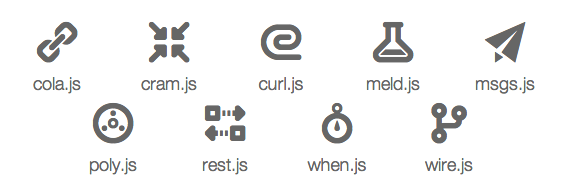
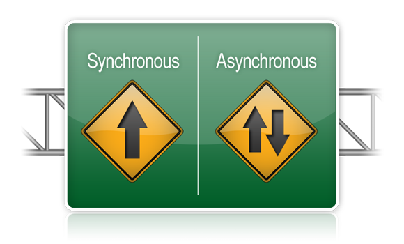

Architectural Toolkit for JavaScript

Fabrice Matrat
Web Architect
15+ years experience
User Groups @ctivist
Cujo
Yet again another MVC ?
Large scale application
Small module
Embrace standard
Fast
modules
Tidy up your Code ?
... or live with the mess
AMD
Asynchronous Module Definition
because nobody likes to wait
Curl
small
4k only
AMD-compliant asynchronous loader
and ...
curl == fast
Designed to be fast
Curl's buddies
AMD-formatted JS modules in // (fast!)
CommonJS modules (fast!)
non-AMD JS files in // (fast!)
CSS, text files in // (fast!)
Waits for dependencies before executing JS
Waits for domReady, if/when desired
And it's fast
Cram

cujoJS resource assembler
Compile all modules into one or small numbers of JS files
and it is...
... FAST
even for a resource assembler
Cram
No-configuration operation for simple applications
High performance operation
All-in-one bundling of Javascript, CSS, and HTML
Efficient, non-blocking loading of bundles
Just-in-time loading of bundles
Cram: the code
In your index.html
In your package.json
{
"name": "MyApp",
....
"scripts": {
"cram": "cram index.html --include curl/plugin/domReady
--include curl/plugin/text
--output app/run.cram.js",
}
}
Is that enough ?
Dependency Injection
- Proven by Spring
- Why not in JS ?
- Browser or Server
Wire
- Dependency Injection
- Lifecycle management
- Configuration
wire: the code
define({
message: "I haz been wired",
// Create an instance of the hello-wired module.
helloWired: {
create: {
module: 'app/hello-wired',
args: { $ref: 'dom.first!hello' }
},
init: {
sayHello: { $ref: 'message' }
}
},
plugins: [
{ module: 'wire/debug' },
{ module: 'wire/dom' }
]
});
- No XML (ugly)
- No Annotation in JS
AOP
Aspect Oriented Programming
Meld
Being able to change/add behavior to existing methods
Ever seen this?
var origDoSomething = thing.doSomething;
thing.doSomething = function() {
doSomethingElseFirst();
return origDoSomething.apply(this, arguments);
}
meld: the code
var myObject = {
doSomething: function(a, b) {
return a + b;
}
};
// Call a function after myObject.doSomething returns
var remover = meld.after(myObject, 'doSomething', function(result) {
console.log('myObject.doSomething returned: ' + result);
});
myObject.doSomething(1, 2); // Logs: "myObject.doSomething returned: 3"
remover.remove();
myObject.doSomething(1, 2); // Nothing logged
AOP + DI: the code
todos: {
create: {
module: 'cola/Collection',
args: {
strategyOptions: {
validator: { module: 'app/create/validateTodo' }
}
}
},
before: {
add: 'cleanTodo | generateMetadata',
update: 'cleanTodo'
}
}
meld + wire = <3
Double Binding

the Force unleashed
Cola
enjoy!
Cola: the code
define({
$exports: { $ref: 'contacts' },
contacts: {
create: {
module: 'cola/Collection',
},
before: {
add: 'cleanContact | generateMetadata',
}
},
contactStore: {
create: {
module: 'cola/adapter/LocalStorage', args: 'contacts-demo'
},
bind: { $ref: 'contacts' }
},
cleanContact: { module: 'app/collection/cleanContact' },
generateMetadata: { module: 'app/collection/generateMetadata' },
$plugins: [
{ module: 'wire/dom' },
{ module: 'wire/on' },
{ module: 'wire/aop' },
{ module: 'cola' }
]
});
Asynchronous development

Promise
When
Lightweight Promises/A+ implementation
Fast
No Dependencies
When: the code
var when = require('when');
var promise = when(0);
function increment(count) {
console.log(count);
return count + 1;
}
promise.then(increment) // 0
.then(increment) // 1
.then(increment) // 2
.then(increment); // 3
Rest
rest: the code
var rest = require('rest');
rest('/').then(function(response) {
console.log('response: ', response);
});
Msgs
- Enterprise Integration Patterns
- Influenced by Spring Integration
- Messaging pattern
msgs: the code
var bus, webSocketServer, redis;
require('msgs/adapters/nodeStream');
require('msgs/adapters/redis');
require('msgs/channels/pubsub');
bus = require('msgs').bus();
redis = require('redis');
webSocketServer = ...;
bus.pubsubChannel('fromClient');
bus.pubsubChannel('toClient');
webSocketServer.on('connection', function (connection) {
bus.nodeStreamGateway(connection, { output: 'fromClient', input: 'toClient' });
});
bus.redisGateway(redis.createClient, 'redisTopic', { output: 'toClient', input: 'fromClient' });
Functional Programming
Most
Monadic Stream implementation
Stress time
A bit of live coding with most
Try it, use it, be happy